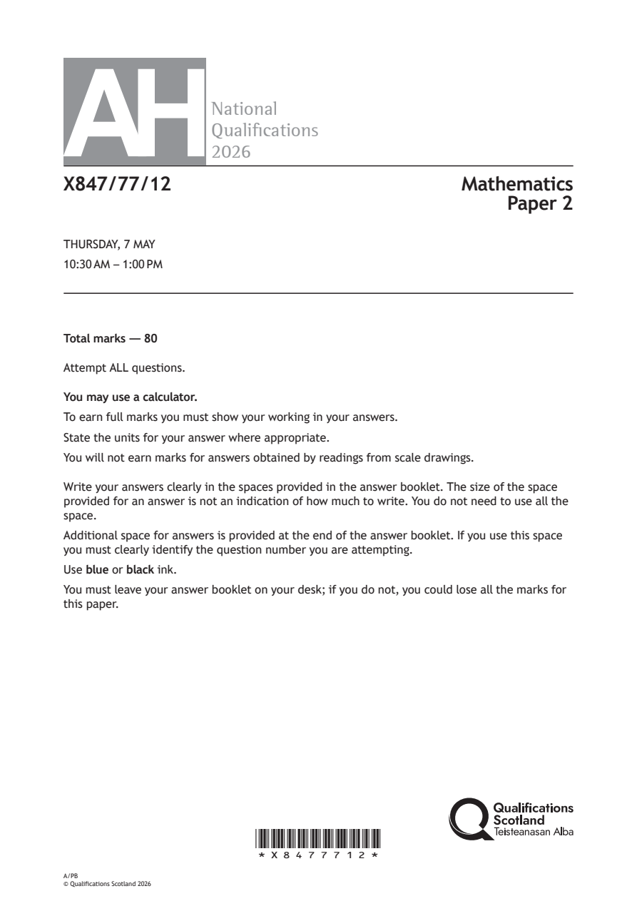
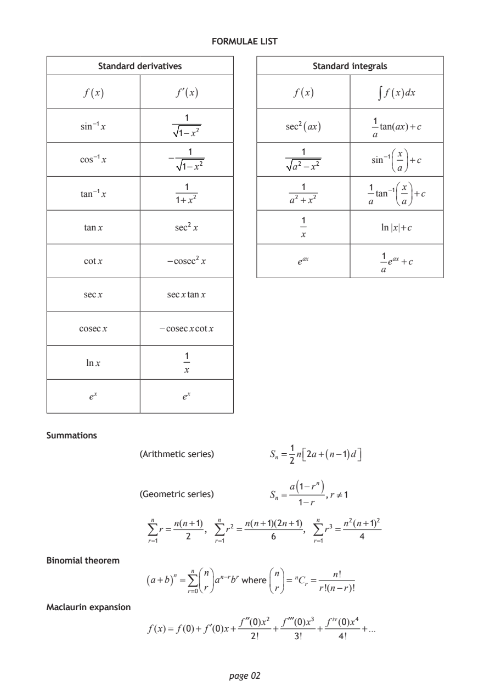
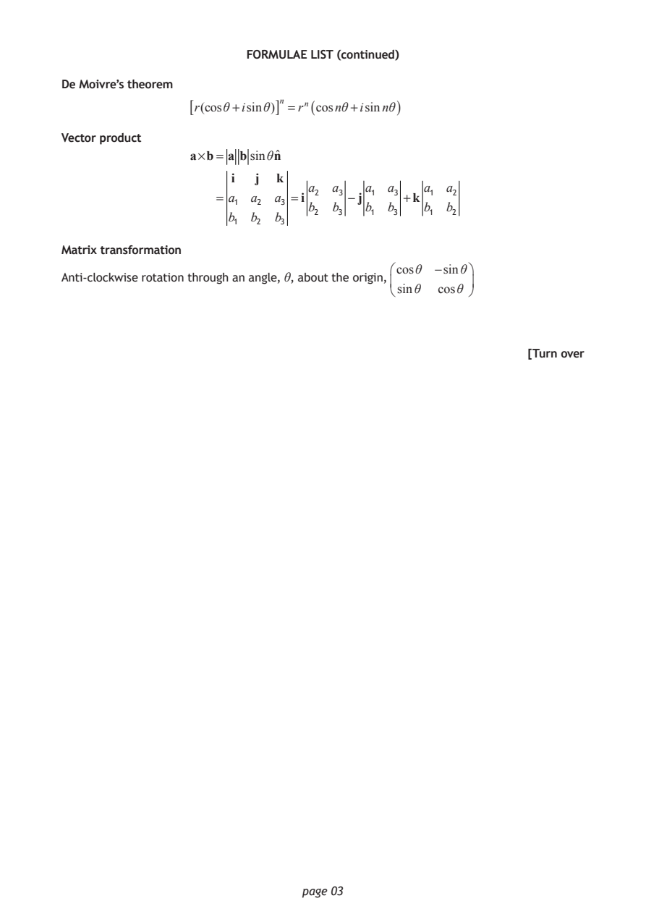
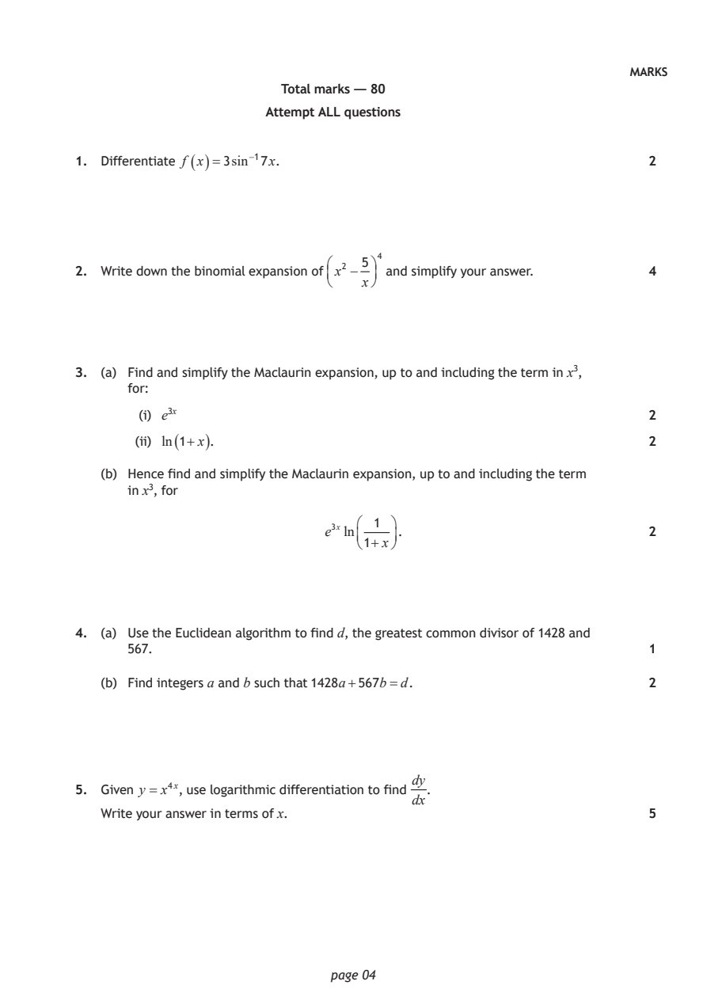
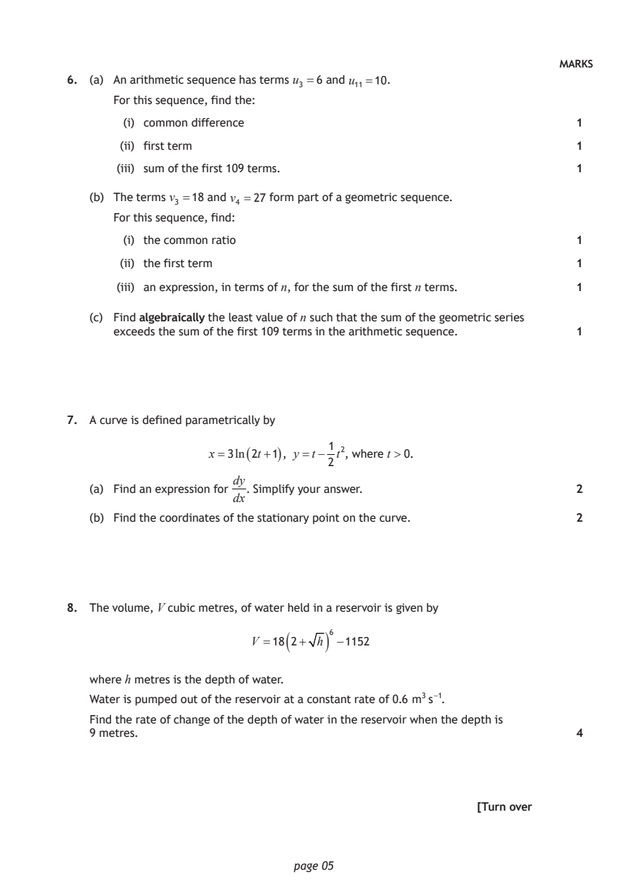
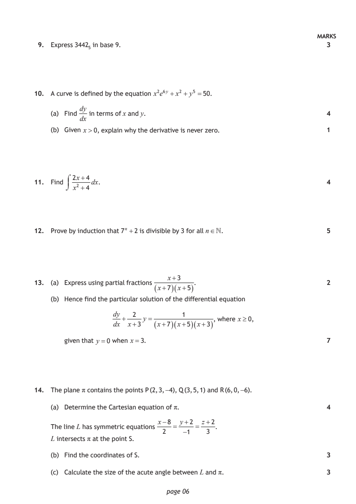
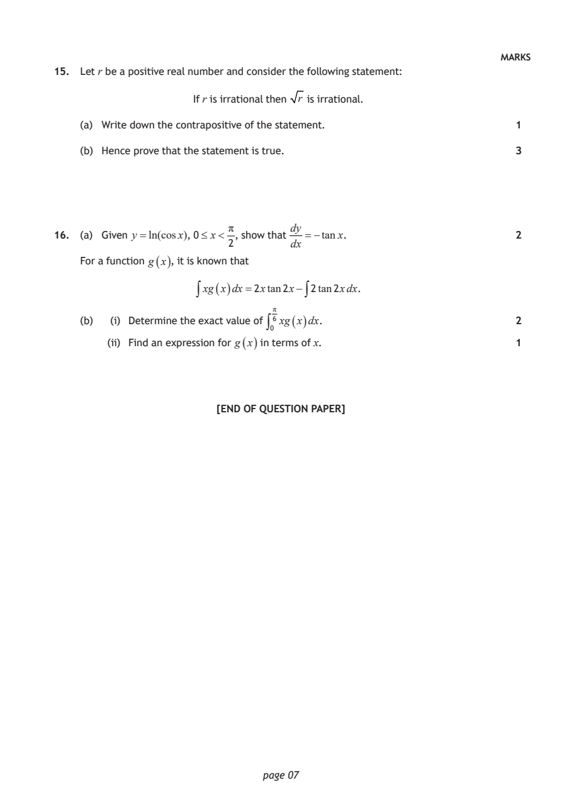

2026 Advanced Higher Mathematics - Paper 2 questions
Source: Scottish Qualifications Authority (SQA) / Qualifications Scotland. This is a StemInteract HTML companion, not an official HTML edition. Selectable text is supplied alongside original page images. Use the images or original PDF for equations, powers, fractions, vector notation, tables and diagrams; text extraction cannot fully preserve mathematical layout.
Jump to a question
PDF page 1

Selectable page text
AH
National
Qualications
2026
X847/77/12 Mathematics
Paper 2
THURSDAY, 7 MAY
10:30 AM – 1:00 PM
Total marks — 80
Attempt ALL questions.
You may use a calculator.
To earn full marks you must show your working in your answers.
State the units for your answer where appropriate.
You will not earn marks for answers obtained by readings from scale drawings.
Write your answers clearly in the spaces provided in the answer booklet. The size of the space
provided for an answer is not an indication of how much to write. You do not need to use all the
space.
Additional space for answers is provided at the end of the answer booklet. If you use this space
you must clearly identify the question number you are attempting.
Use blue or black ink.
You must leave your answer booklet on your desk; if you do not, you could lose all the marks for
this paper.
*X8477712*
A/PB
© Qualifications Scotland 2026PDF page 2

Selectable page text
FORMULAE LIST
Standard derivatives Standard integrals
f (x) f′(x) f (x) ∫ f (x)dx
1
1
sin⁻¹x sec²(ax) tan(ax)+c
1−x² a
1 1 ⎛ x⎞
cos⁻¹x − sin⁻¹⎜ ⎟+c
1−x² a² −x² ⎝a⎠
1 1 1 ⎛ x⎞
tan⁻¹x tan⁻¹⎜ ⎟+c
1+x² a² +x² a ⎝a⎠
1
tanx sec² x ln|x|+c
x
1
cotx −cosec²x e^{a}^{x} e^{a}^{x} +c
a
secx secxtanx
cosecx −cosecxcotx
1
lnx
x
e^{x} e^{x}
Summations
1
(Arithmetic series) Sₙ = n⎡ ⎣ 2a+(n−1)d⎤ ⎦
2
( )
a 1−rⁿ
(Geometric series) Sₙ = ,r ≠1
1−r
n n(n+1) n n(n+1)(2n+1) n n²(n+1)²
∑r = , ∑r² = , ∑r³ =
2 6 4
r=1 r=1 r=1
Binomial theorem
n ⎛n⎞ ⎛n⎞ ₙ n!
(a+b)ⁿ =∑ ⎜ ⎟aⁿ⁻^{r}b^{r} where ⎜ ⎟= Cᵣ =
⎝r⎠ ⎝r⎠ r!(n−r)!
r=0
Maclaurin expansion
f′′(0)x² f′′′(0)x³ fⁱ^{v}(0)x⁴
f(x)= f(0)+ f′(0)x+ + + +...
2! 3! 4!
page 02PDF page 3

Selectable page text
FORMULAE LIST (continued)
De Moivre’s theorem
[r(cosθ+isinθ)]ⁿ =rⁿ(cosnθ+isinnθ)
Vector product
a×b= a bsinθnˆ
i j k
a₂ a₃ a₁ a₃ a₁ a₂
= a₁ a₂ a₃ =i −j +k
b₂ b₃ b₁ b₃ b₁ b₂
b₁ b₂ b₃
Matrix transformation
⎛cosθ −sinθ⎞
Anti‑clockwise rotation through an angle, θ, about the origin,
⎜ ⎟
⎝sinθ cosθ ⎠
[Turn over
page 03PDF page 4
Paper 2, Question 1Paper 2, Question 2Paper 2, Question 3Paper 2, Question 4Paper 2, Question 5
Selectable page text
[StemInteract: this page transcription includes notation repairs checked against the original image. sqrt(...) means square root; ^ denotes a power.]
MARKS
Total marks — 80
Attempt ALL questions
1. Differentiate f ( x )=3sin⁻¹7x. 2
5⁴
2. Write down the binomial expansion of x² − and simplify your answer. 4
x
3. (a) Find and simplify the Maclaurin expansion, up to and including the term in x³,
for:
(i) e³^{x} 2
(ii) ln ( 1+x ). 2
(b) Hence find and simplify the Maclaurin expansion, up to and including the term
in x³, for
1
e³^{x}ln . 2
1+x
4. (a) Use the Euclidean algorithm to find d, the greatest common divisor of 1428 and
567. 1
(b) Find integers a and b such that 1428a+567b=d. 2
dy
5. Given y = x^(4*x), use logarithmic differentiation to find .
dx
Write your answer in terms of x. 5
page 04PDF page 5
Paper 2, Question 6Paper 2, Question 7Paper 2, Question 8
Selectable page text
[StemInteract: this page transcription includes notation repairs checked against the original image. sqrt(...) means square root; ^ denotes a power.]
MARKS
6. (a) An arithmetic sequence has terms u₃ =6 and u₁₁=10.
For this sequence, find the:
(i) common difference 1
(ii) first term 1
(iii) sum of the first 109 terms. 1
(b) The terms v₃ =18 and v₄ =27 form part of a geometric sequence.
For this sequence, find:
(i) the common ratio 1
(ii) the first term 1
(iii) an expression, in terms of n, for the sum of the first n terms. 1
(c) Find algebraically the least value of n such that the sum of the geometric series
exceeds the sum of the first 109 terms in the arithmetic sequence. 1
7. A curve is defined parametrically by
1
x=3ln ( 2t+1 ) , y =t− t², where t >0.
2
dy
(a) Find an expression for . Simplify your answer. 2
dx
(b) Find the coordinates of the stationary point on the curve. 2
8. The volume, V cubic metres, of water held in a reservoir is given by
V = 18*(2 + sqrt(h))^6 - 1152
where h metres is the depth of water.
Water is pumped out of the reservoir at a constant rate of 0.6 m³s⁻¹.
Find the rate of change of the depth of water in the reservoir when the depth is
9 metres. 4
[Turn over
page 05PDF page 6
Paper 2, Question 9Paper 2, Question 10Paper 2, Question 11Paper 2, Question 12Paper 2, Question 13Paper 2, Question 14
Selectable page text
MARKS
9. Express 3442₅ in base 9. 3
10. A curve is defined by the equation x²e⁶^{y} +x² + y⁵ =50.
dy
(a) Find in terms of x and y. 4
dx
(b) Given x>0, explain why the derivative is never zero. 1
2x+4
11. Find dx. 4
x² +4
12. Prove by induction that 7ⁿ +2 is divisible by 3 for all n∞. 5
x+3
13. (a) Express using partial fractions . 2
( x+7 )( x+5 )
(b) Hence find the particular solution of the differential equation
dy 2 1
+ y = , where x≥0,
dx x+3 ( x+7 )( x+5 )( x+3 )
given that y =0 when x=3. 7
14. The plane π contains the points P (2, 3, −4), Q (3, 5, 1) and R (6, 0, −6).
(a) Determine the Cartesian equation of π. 4
x−8 y+2 z+2
The line L has symmetric equations = = .
2 −1 3
L intersects π at the point S.
(b) Find the coordinates of S. 3
(c) Calculate the size of the acute angle between L and π. 3
page 06PDF page 7
Paper 2, Question 15Paper 2, Question 16
Selectable page text
[StemInteract: this page transcription includes notation repairs checked against the original image. sqrt(...) means square root; ^ denotes a power.]
MARKS
15. Let r be a positive real number and consider the following statement:
If r is irrational then sqrt(r) is irrational.
(a) Write down the contrapositive of the statement. 1
(b) Hence prove that the statement is true. 3
π dy
16. (a) Given y =ln(cosx), 0≤ x< , show that =−tanx. 2
2 dx
For a function g ( x ), it is known that
∫xg(x)dx=2xtan2x−∫2tan2xdx.
π
(b) (i) Determine the exact value of ∫₀⁶ xg ( x ) dx. 2
(ii) Find an expression for g ( x ) in terms of x. 1
[END OF QUESTION PAPER]
page 07PDF page 8
Selectable page text
[BLANK PAGE]
DO NOT WRITE ON THIS PAGE
page 08